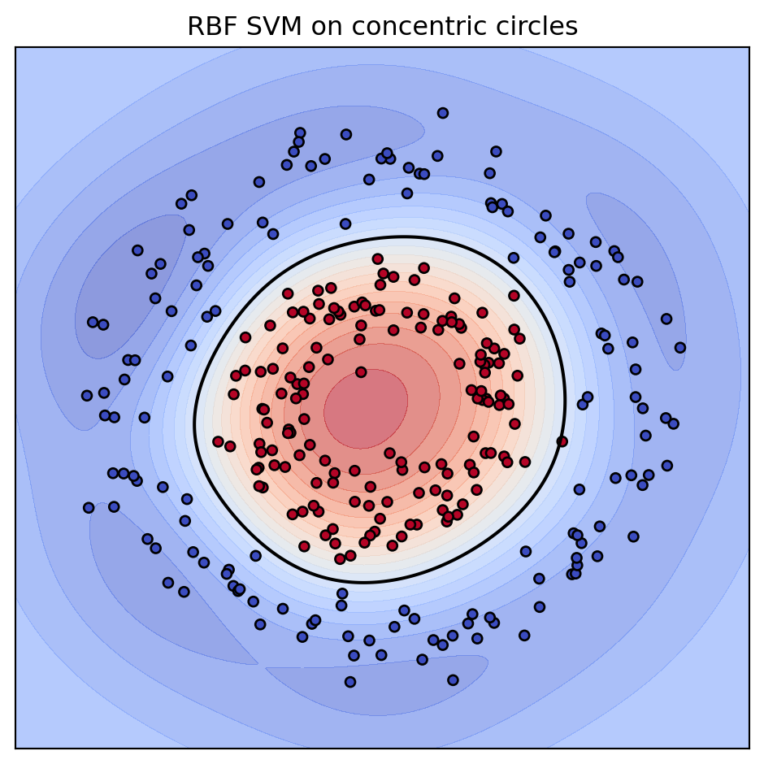
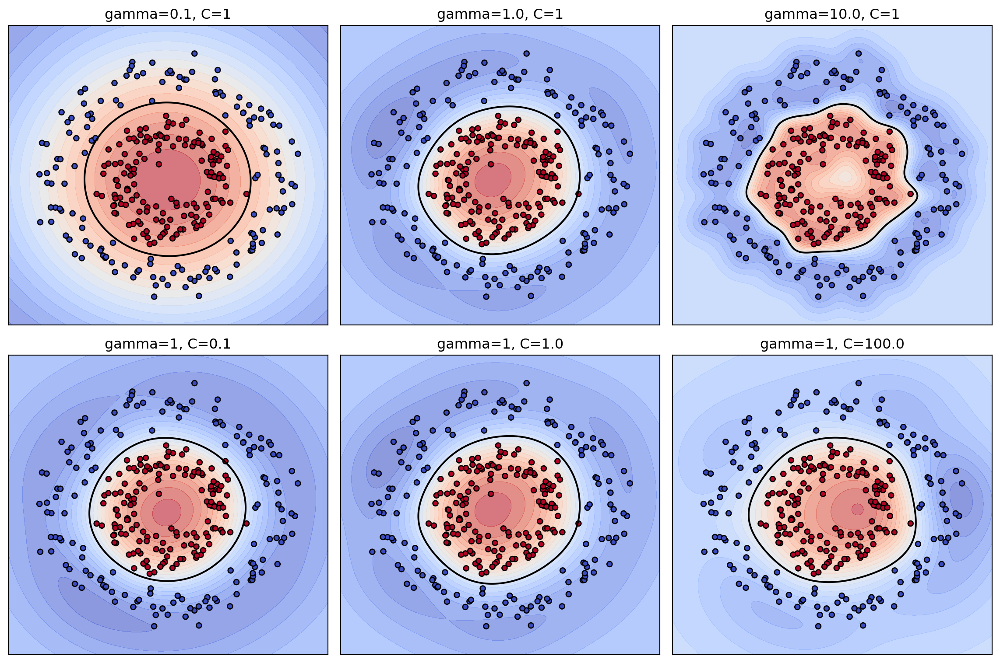

flowchart LR
A[Inputs x_i in R^d] --> B[Choose kernel k]
B --> C[Gram matrix K_ij = k of x_i and x_j]
C --> D[Solve dual QP for alpha]
D --> E[Support vectors with alpha greater than 0]
E --> F[Predictor f of x equals sign of weighted kernel sum plus b]
B -. implicit feature map phi .-> G[Feature space H]
G -. inner product .-> C
117 Kernel SVMs and Kernel Methods
Support vector machines (SVMs) are among the most theoretically grounded tools in supervised learning. Their power comes not only from the maximum margin principle but from the way kernels let a linear algorithm operate in rich, possibly infinite dimensional feature spaces without ever forming coordinates explicitly. This chapter develops kernel SVMs from the dual formulation, explains the kernel trick, surveys the standard kernels, states Mercer’s condition, presents the reproducing kernel Hilbert space (RKHS) viewpoint, and closes with the practical effects of hyperparameters.
117.1 1. From Linear SVMs to the Dual
117.1.1 1.1 The soft margin primal
Given training data \(\{(\mathbf{x}_i, y_i)\}_{i=1}^n\) with \(\mathbf{x}_i \in \mathbb{R}^d\) and labels \(y_i \in \{-1, +1\}\), the soft margin SVM seeks a hyperplane \(\mathbf{w}^\top \mathbf{x} + b = 0\) that separates the classes with the widest possible margin while tolerating some violations. The primal problem is
\[ \min_{\mathbf{w}, b, \boldsymbol{\xi}} \quad \frac{1}{2}\|\mathbf{w}\|^2 + C \sum_{i=1}^n \xi_i \quad \text{subject to} \quad y_i(\mathbf{w}^\top \mathbf{x}_i + b) \ge 1 - \xi_i, \quad \xi_i \ge 0. \]
The slack variables \(\xi_i\) measure how far a point intrudes into or across the margin, and the penalty constant \(C > 0\) trades off margin width against training violations. Large \(C\) pushes the solution toward few violations and a narrow margin, while small \(C\) favors a wider margin and accepts more slack.
117.1.2 1.2 The Lagrangian dual
Introducing multipliers \(\alpha_i \ge 0\) for the margin constraints and \(\mu_i \ge 0\) for the nonnegativity of slacks, then applying the stationarity conditions, yields the key identity
\[ \mathbf{w} = \sum_{i=1}^n \alpha_i y_i \mathbf{x}_i . \]
Substituting back produces the dual problem,
\[ \max_{\boldsymbol{\alpha}} \quad \sum_{i=1}^n \alpha_i - \frac{1}{2}\sum_{i=1}^n \sum_{j=1}^n \alpha_i \alpha_j y_i y_j \, \mathbf{x}_i^\top \mathbf{x}_j \quad \text{subject to} \quad 0 \le \alpha_i \le C, \quad \sum_{i=1}^n \alpha_i y_i = 0. \]
Two facts deserve emphasis. First, the data enter the objective only through inner products \(\mathbf{x}_i^\top \mathbf{x}_j\). Second, by complementary slackness, most \(\alpha_i\) are zero at the optimum; the points with \(\alpha_i > 0\) are the support vectors and they alone determine the decision boundary. The prediction for a new point reads
\[ f(\mathbf{x}) = \operatorname{sign}\!\left(\sum_{i=1}^n \alpha_i y_i \, \mathbf{x}_i^\top \mathbf{x} + b\right), \]
which again uses only inner products between data points.
117.2 2. The Kernel Trick
117.2.1 2.1 Lifting into feature space
A linear classifier cannot separate data whose classes are interleaved, such as one class forming a disk and the other a surrounding annulus. The classical remedy is to map inputs through a feature map \(\phi : \mathbb{R}^d \to \mathcal{H}\) into a higher dimensional space where the classes become linearly separable, then run a linear SVM there. The dual objective and the predictor depend on the data only through inner products, so the lifted versions require the quantities \(\phi(\mathbf{x}_i)^\top \phi(\mathbf{x}_j)\).
The kernel trick is the observation that we never need \(\phi\) explicitly. If there exists a function
\[ k(\mathbf{x}, \mathbf{x}') = \langle \phi(\mathbf{x}), \phi(\mathbf{x}') \rangle_{\mathcal{H}} \]
that computes the feature space inner product directly from the original inputs, we substitute \(k(\mathbf{x}_i, \mathbf{x}_j)\) for every \(\mathbf{x}_i^\top \mathbf{x}_j\) and solve the same convex program. The feature space may even be infinite dimensional, yet each kernel evaluation costs roughly \(O(d)\) time.
117.2.2 2.2 A concrete example
Consider the quadratic map on \(\mathbb{R}^2\),
\[ \phi(\mathbf{x}) = (x_1^2,\ \sqrt{2}\,x_1 x_2,\ x_2^2). \]
A direct computation gives
\[ \phi(\mathbf{x})^\top \phi(\mathbf{x}') = (x_1 x_1' + x_2 x_2')^2 = (\mathbf{x}^\top \mathbf{x}')^2 . \]
So the inner product of explicit three dimensional features equals the square of a two dimensional inner product. We obtain the lifted geometry at the cost of a scalar squaring. This is precisely the homogeneous polynomial kernel of degree two, and the same telescoping works for arbitrary degree, where the explicit feature dimension grows combinatorially while the kernel stays cheap.
117.2.3 2.3 Worked example
Take \(\mathbf{x} = (1, 2)\) and \(\mathbf{x}' = (3, 1)\). The raw inner product is \(\mathbf{x}^\top \mathbf{x}' = 1 \cdot 3 + 2 \cdot 1 = 5\), so the degree two homogeneous kernel returns \(k(\mathbf{x}, \mathbf{x}') = 5^2 = 25\). Computing through the explicit map instead, \(\phi(\mathbf{x}) = (1, 2\sqrt{2}, 4)\) and \(\phi(\mathbf{x}') = (9, 3\sqrt{2}, 1)\), and the feature space inner product is
\[ \phi(\mathbf{x})^\top \phi(\mathbf{x}') = 1 \cdot 9 + (2\sqrt{2})(3\sqrt{2}) + 4 \cdot 1 = 9 + 12 + 4 = 25 . \]
The two routes agree, but the kernel form did one multiply and one square while the explicit form built three dimensional vectors first. For a degree \(p\) kernel on \(d\) inputs the explicit map has \(\binom{d+p-1}{p}\) coordinates, yet the kernel still costs one inner product and one power. The symbolic verification cell below confirms this identity in full generality.
117.2.4 2.4 The kernelized SVM
The kernel SVM dual and predictor follow by direct substitution:
maximize sum_i a_i - (1/2) sum_i sum_j a_i a_j y_i y_j K[i,j]
subject to 0 <= a_i <= C, sum_i a_i y_i = 0
f(x) = sign( sum_i a_i y_i k(x_i, x) + b )Here \(K\) is the \(n \times n\) Gram matrix with entries \(K_{ij} = k(\mathbf{x}_i, \mathbf{x}_j)\). The whole machine is now expressed in terms of \(K\) and the labels; the input dimension \(d\) enters only when each kernel value is computed.
The full pipeline, from raw inputs through the implicit lift to the decision rule, is summarized below.
117.3 3. Common Kernels
117.3.1 3.1 Linear kernel
The linear kernel \(k(\mathbf{x}, \mathbf{x}') = \mathbf{x}^\top \mathbf{x}'\) recovers the original linear SVM. It is the default for high dimensional sparse data such as text, where the data are often already separable and adding nonlinearity buys little while costing interpretability and speed.
117.3.2 3.2 Polynomial kernel
The polynomial kernel is
\[ k(\mathbf{x}, \mathbf{x}') = (\gamma\, \mathbf{x}^\top \mathbf{x}' + c)^{\,p}, \]
with degree \(p \in \mathbb{N}\), scale \(\gamma > 0\), and offset \(c \ge 0\). The constant \(c\) controls the relative weight of higher order versus lower order terms; with \(c = 0\) the kernel is homogeneous and only monomials of exact degree \(p\) appear. The feature space has dimension that grows like \(\binom{d+p}{p}\), so even modest degrees encode many interactions. Polynomial kernels are sensitive to scaling and can produce ill conditioned Gram matrices for large \(p\), so degrees beyond three or four are uncommon.
117.3.3 3.3 Radial basis function kernel
The Gaussian or radial basis function (RBF) kernel,
\[ k(\mathbf{x}, \mathbf{x}') = \exp\!\left(-\gamma\, \|\mathbf{x} - \mathbf{x}'\|^2\right), \qquad \gamma > 0, \]
is the most widely used kernel for general purpose nonlinear classification. It corresponds to an infinite dimensional feature space, and it acts as a similarity measure that decays smoothly with distance. The bandwidth parameter \(\gamma\) (sometimes written \(\gamma = 1/(2\sigma^2)\)) sets the length scale over which a training point exerts influence. The RBF kernel is stationary, meaning it depends only on \(\mathbf{x} - \mathbf{x}'\), and it is universal in the sense that an RBF SVM can approximate any continuous decision boundary given enough data.
To see why the feature space is infinite dimensional, expand the kernel on \(\mathbb{R}\) with \(\gamma = 1\). Writing the squared distance out,
\[ k(x, x') = e^{-(x - x')^2} = e^{-x^2}\, e^{-x'^2}\, e^{2 x x'}, \]
and substituting the power series \(e^{2 x x'} = \sum_{m=0}^{\infty} \frac{(2 x x')^m}{m!}\) gives
\[ k(x, x') = \sum_{m=0}^{\infty} \left( e^{-x^2} \sqrt{\frac{2^m}{m!}}\, x^m \right) \left( e^{-x'^2} \sqrt{\frac{2^m}{m!}}\, x'^m \right) = \langle \phi(x), \phi(x') \rangle . \]
The feature map therefore has one coordinate for every nonnegative integer \(m\),
\[ \phi(x) = e^{-x^2} \left( 1,\ \sqrt{\frac{2}{1!}}\, x,\ \sqrt{\frac{2^2}{2!}}\, x^2,\ \sqrt{\frac{2^3}{3!}}\, x^3,\ \dots \right), \]
an infinite sequence with no finite truncation that reproduces the kernel exactly. This is the explicit Mercer expansion: the RBF kernel is a genuine inner product in \(\ell^2\), which is why no finite \(\phi\) can ever materialize it and why the kernel trick is essential rather than merely convenient.
117.3.4 3.4 Sigmoid kernel
The sigmoid kernel,
\[ k(\mathbf{x}, \mathbf{x}') = \tanh\!\left(\gamma\, \mathbf{x}^\top \mathbf{x}' + c\right), \]
originates from an analogy with two layer neural networks, where each support vector resembles a hidden unit. It is only conditionally a valid kernel: for many parameter choices the resulting Gram matrix is not positive semidefinite, so the optimization loses its theoretical guarantees and may behave erratically. In practice it rarely outperforms the RBF kernel and is mostly of historical interest.
117.3.5 3.5 Choosing among them
A reasonable default workflow is to standardize features, try a linear kernel first for a fast baseline, then move to RBF for nonlinear structure, tuning \(C\) and \(\gamma\) jointly. Polynomial kernels are worth trying when domain knowledge suggests explicit feature interactions of a known order. The sigmoid kernel should be approached with caution given its indefiniteness.
117.4 4. Mercer’s Condition and Positive Definiteness
117.4.1 4.1 What makes a function a kernel
Not every symmetric function of two arguments is a legitimate kernel. For the kernel trick to be sound, \(k\) must correspond to an inner product in some feature space, which requires it to be a positive semidefinite kernel. The operational criterion is on the Gram matrix.
A symmetric function \(k\) is a positive semidefinite kernel if for every finite set of points \(\mathbf{x}_1, \dots, \mathbf{x}_n\) the Gram matrix \(K\) with \(K_{ij} = k(\mathbf{x}_i, \mathbf{x}_j)\) is positive semidefinite, that is
\[ \sum_{i=1}^n \sum_{j=1}^n c_i c_j\, k(\mathbf{x}_i, \mathbf{x}_j) \ge 0 \quad \text{for all } c_1, \dots, c_n \in \mathbb{R}. \]
This guarantees both that a feature map exists and that the SVM dual remains a convex quadratic program with a unique global optimum.
117.4.2 4.2 Mercer’s theorem
Mercer’s theorem provides the functional analytic justification. Suppose \(k\) is a continuous symmetric function on a compact domain \(\mathcal{X}\) and that the integral operator
\[ (T_k f)(\mathbf{x}) = \int_{\mathcal{X}} k(\mathbf{x}, \mathbf{x}') f(\mathbf{x}')\, d\mathbf{x}' \]
is positive semidefinite, meaning \(\int\int k(\mathbf{x}, \mathbf{x}') f(\mathbf{x}) f(\mathbf{x}')\, d\mathbf{x}\, d\mathbf{x}' \ge 0\) for all square integrable \(f\). Then \(k\) admits an eigenexpansion
\[ k(\mathbf{x}, \mathbf{x}') = \sum_{m=1}^{\infty} \lambda_m\, \psi_m(\mathbf{x})\, \psi_m(\mathbf{x}'), \]
with nonnegative eigenvalues \(\lambda_m \ge 0\) and orthonormal eigenfunctions \(\psi_m\). Defining the feature map \(\phi(\mathbf{x}) = (\sqrt{\lambda_1}\,\psi_1(\mathbf{x}), \sqrt{\lambda_2}\,\psi_2(\mathbf{x}), \dots)\) makes the kernel a genuine inner product, \(k(\mathbf{x}, \mathbf{x}') = \langle \phi(\mathbf{x}), \phi(\mathbf{x}') \rangle\). Mercer’s theorem is thus the bridge between the abstract requirement of positive semidefiniteness and the concrete existence of a feature space.
117.4.3 4.3 Rules for building kernels
Valid kernels form a closed and convex cone, which gives a useful algebra. If \(k_1\) and \(k_2\) are kernels, then so are
\[ k_1 + k_2, \qquad \alpha\, k_1 \ \ (\alpha \ge 0), \qquad k_1 \cdot k_2, \]
and \(g(\mathbf{x})\, k_1(\mathbf{x}, \mathbf{x}')\, g(\mathbf{x}')\) for any real function \(g\). Compositions with power series having nonnegative coefficients, such as the exponential, are also kernels. These closure properties explain why the polynomial kernel (a sum of products of the linear kernel) and the RBF kernel (an exponential of a valid construction) are guaranteed positive semidefinite, and they let practitioners design new kernels with confidence.
117.5 5. The Reproducing Kernel Hilbert Space View
117.5.1 5.1 Defining the RKHS
The RKHS perspective recasts kernel methods as function approximation in a structured space of functions rather than geometry in a coordinate space. Given a positive semidefinite kernel \(k\), there is a unique Hilbert space \(\mathcal{H}_k\) of functions on \(\mathcal{X}\) in which \(k\) acts as a representer of evaluation. Concretely, for each fixed \(\mathbf{x}\) the function \(k_{\mathbf{x}}(\cdot) = k(\mathbf{x}, \cdot)\) belongs to \(\mathcal{H}_k\), and the reproducing property holds:
\[ \langle f, k_{\mathbf{x}} \rangle_{\mathcal{H}_k} = f(\mathbf{x}) \quad \text{for all } f \in \mathcal{H}_k. \]
In particular \(\langle k_{\mathbf{x}}, k_{\mathbf{x}'} \rangle_{\mathcal{H}_k} = k(\mathbf{x}, \mathbf{x}')\), so the kernel is literally the inner product of the feature vectors \(\phi(\mathbf{x}) = k_{\mathbf{x}}\). The Moore and Aronszajn theorem guarantees this correspondence between positive semidefinite kernels and RKHS is one to one.
117.5.2 5.2 The representer theorem
The reason the RKHS view matters for learning is the representer theorem. Consider regularized empirical risk minimization over an RKHS,
\[ \min_{f \in \mathcal{H}_k} \ \frac{1}{n}\sum_{i=1}^n L\big(y_i, f(\mathbf{x}_i)\big) + \lambda\, \|f\|_{\mathcal{H}_k}^2, \]
for any loss \(L\) and any \(\lambda > 0\). The theorem states that the minimizer admits a finite representation as a kernel expansion over the training points,
\[ f^\star(\mathbf{x}) = \sum_{i=1}^n \beta_i\, k(\mathbf{x}_i, \mathbf{x}). \]
An infinite dimensional optimization collapses to a search over \(n\) coefficients. The soft margin SVM is the special case where \(L\) is the hinge loss \(\max(0, 1 - y_i f(\mathbf{x}_i))\) and \(\lambda\) relates inversely to \(C\). The RKHS norm \(\|f\|_{\mathcal{H}_k}\) measures the smoothness of \(f\) as judged by the kernel, so kernel regularization is a smoothness prior, and the choice of kernel encodes which functions are considered simple.
117.5.3 5.3 Why this unifies kernel methods
Because the representer theorem holds for a broad class of losses, the same RKHS machinery underlies support vector regression, kernel ridge regression, kernel logistic regression, kernel principal component analysis, and Gaussian process models. The kernel is the single modeling choice that defines the hypothesis space and its geometry, and every algorithm differs only in the loss and regularizer applied on top. This is why kernels are best understood not as a trick attached to SVMs but as a general mechanism for nonlinear, nonparametric learning.
117.6 6. Hyperparameter Effects
117.6.1 6.1 The regularization constant C
The constant \(C\) governs the bias and variance tradeoff. Small \(C\) tolerates many margin violations, yielding a smooth, low variance boundary that may underfit. Large \(C\) forces the model to classify the training set tightly, producing a complex, high variance boundary prone to overfitting and dominated by a few hard points. Because \(C\) multiplies the sum of slacks, its effect interacts with the number of samples and the kernel scale, so it should always be tuned rather than fixed.
117.6.2 6.2 The RBF bandwidth gamma
For the RBF kernel, \(\gamma\) controls the reach of each training point. Small \(\gamma\) corresponds to a large length scale, so the influence of a point spreads broadly and the decision surface is nearly linear and smooth, risking underfitting. Large \(\gamma\) corresponds to a small length scale, so each point influences only its immediate neighborhood; in the extreme the model memorizes the training data, with the Gram matrix approaching the identity and every point becoming a support vector. The interplay between \(C\) and \(\gamma\) is strong: a grid search over both, typically on a logarithmic scale, is the standard tuning procedure.
C_grid = [2^-5, 2^-3, ..., 2^15]
gamma_grid = [2^-15, 2^-13, ..., 2^3]
for C in C_grid:
for gamma in gamma_grid:
score = cross_validate(SVM(kernel="rbf", C=C, gamma=gamma))
pick (C, gamma) with best mean validation score117.6.3 6.3 Polynomial degree and offset
For the polynomial kernel, the degree \(p\) directly sets model complexity: higher degrees admit more intricate boundaries but raise variance and worsen numerical conditioning, since kernel values can span many orders of magnitude. The offset \(c\) balances the contribution of low and high order monomials, and the scale \(\gamma\) normalizes the inner product. Feature standardization is essential here, because unnormalized inputs make \((\gamma\,\mathbf{x}^\top\mathbf{x}' + c)^p\) explode or vanish.
117.6.4 6.4 Practical guidance
Three practices reliably improve kernel SVM results. First, standardize or scale features before training, because every common kernel depends on inner products or distances that are sensitive to feature magnitudes. Second, tune hyperparameters with cross validation on a logarithmic grid, and refine around the best region. Third, watch the support vector count: if nearly all training points become support vectors, the model is likely overfitting and \(\gamma\) or \(C\) should be reduced. Finally, remember that kernel SVMs scale between quadratically and cubically in the number of samples because of the Gram matrix, so for very large datasets approximate methods such as random Fourier features or the Nystrom method, or a linear SVM on engineered features, are preferable.
117.7 7. Implementation in Practice
The following implementations fit kernel SVMs on a nonlinearly separable dataset, compare kernels by cross validation, visualize how the RBF hyperparameters reshape the boundary, and symbolically confirm the polynomial kernel identity.
Code
import numpy as np
import pandas as pd
import matplotlib.pyplot as plt
import sympy as sp
from sklearn.datasets import make_circles
from sklearn.svm import SVC
from sklearn.model_selection import cross_val_score
from sklearn.preprocessing import StandardScaler
from sklearn.pipeline import make_pipeline
np.random.seed(0)
# Nonlinearly separable data: concentric circles
X, y = make_circles(n_samples=300, noise=0.10, factor=0.45, random_state=0)
Xs = StandardScaler().fit_transform(X)
def plot_boundary(ax, clf, X, y, title):
h = 0.02
x_min, x_max = X[:, 0].min() - 0.5, X[:, 0].max() + 0.5
y_min, y_max = X[:, 1].min() - 0.5, X[:, 1].max() + 0.5
xx, yy = np.meshgrid(np.arange(x_min, x_max, h),
np.arange(y_min, y_max, h))
Z = clf.decision_function(np.c_[xx.ravel(), yy.ravel()]).reshape(xx.shape)
ax.contourf(xx, yy, Z, levels=20, cmap="coolwarm", alpha=0.6)
ax.contour(xx, yy, Z, levels=[0], colors="k", linewidths=1.5)
ax.scatter(X[:, 0], X[:, 1], c=y, cmap="coolwarm", edgecolors="k", s=20)
ax.set_title(title)
ax.set_xticks([]); ax.set_yticks([])
# Figure 1: RBF SVM decision boundary on nonlinear data
clf = SVC(kernel="rbf", C=1.0, gamma=1.0).fit(Xs, y)
fig1, ax = plt.subplots(figsize=(5, 5))
plot_boundary(ax, clf, Xs, y, "RBF SVM on concentric circles")
fig1.tight_layout()
plt.show()
print(f"Support vectors: {clf.n_support_.sum()} of {len(y)}")
# Figure 2: effect of gamma (top row) and C (bottom row)
fig2, axes = plt.subplots(2, 3, figsize=(12, 8))
for j, gamma in enumerate([0.1, 1.0, 10.0]):
c = SVC(kernel="rbf", C=1.0, gamma=gamma).fit(Xs, y)
plot_boundary(axes[0, j], c, Xs, y, f"gamma={gamma}, C=1")
for j, Cval in enumerate([0.1, 1.0, 100.0]):
c = SVC(kernel="rbf", C=Cval, gamma=1.0).fit(Xs, y)
plot_boundary(axes[1, j], c, Xs, y, f"gamma=1, C={Cval}")
fig2.tight_layout()
plt.show()
# Results table: kernel and params versus 5-fold CV accuracy
configs = [
("linear", dict(kernel="linear", C=1.0)),
("poly (p=2)", dict(kernel="poly", degree=2, C=1.0, gamma="scale")),
("poly (p=3)", dict(kernel="poly", degree=3, C=1.0, gamma="scale")),
("rbf (g=0.1)", dict(kernel="rbf", C=1.0, gamma=0.1)),
("rbf (g=1)", dict(kernel="rbf", C=1.0, gamma=1.0)),
("rbf (g=10)", dict(kernel="rbf", C=1.0, gamma=10.0)),
]
rows = []
for name, params in configs:
pipe = make_pipeline(StandardScaler(), SVC(**params))
scores = cross_val_score(pipe, X, y, cv=5)
rows.append({"kernel/params": name,
"cv_accuracy": round(scores.mean(), 4),
"cv_std": round(scores.std(), 4)})
results = pd.DataFrame(rows)
print("\nKernel comparison (5-fold CV on circles):")
print(results.to_string(index=False))
# SymPy: verify degree-2 polynomial kernel equals explicit inner product
x1, x2, z1, z2 = sp.symbols("x1 x2 z1 z2", real=True)
phi_x = sp.Matrix([x1**2, sp.sqrt(2) * x1 * x2, x2**2])
phi_z = sp.Matrix([z1**2, sp.sqrt(2) * z1 * z2, z2**2])
explicit = sp.expand((phi_x.T * phi_z)[0])
kernel = sp.expand((x1 * z1 + x2 * z2) ** 2)
print("\nSymPy check, phi(x).phi(z) - (x.z)^2 =",
sp.simplify(explicit - kernel))
Support vectors: 46 of 300
Kernel comparison (5-fold CV on circles):
kernel/params cv_accuracy cv_std
linear 0.5200 0.0287
poly (p=2) 0.9967 0.0067
poly (p=3) 0.6533 0.0414
rbf (g=0.1) 0.9967 0.0067
rbf (g=1) 0.9967 0.0067
rbf (g=10) 0.9967 0.0067
SymPy check, phi(x).phi(z) - (x.z)^2 = 0using MLJ, LIBSVM, DataFrames, Random
Random.seed!(0)
# Concentric circles: inner class plus outer ring
function make_circles(n; noise=0.10, factor=0.45)
n1 = n ÷ 2
t = 2π .* rand(n)
r = vcat(fill(1.0, n - n1), fill(factor, n1))
X = hcat(r .* cos.(t), r .* sin.(t)) .+ noise .* randn(n, 2)
y = vcat(fill(1, n - n1), fill(0, n1))
return MLJ.table(X), categorical(y)
end
X, y = make_circles(300)
SVC = @load SVC pkg=LIBSVM verbosity=0
# Compare kernels via 5-fold cross-validated accuracy
for (name, model) in [
("linear", SVC(kernel=LIBSVM.Kernel.Linear, cost=1.0)),
("poly p=3", SVC(kernel=LIBSVM.Kernel.Polynomial, degree=Int32(3))),
("rbf g=1", SVC(kernel=LIBSVM.Kernel.RadialBasis, gamma=1.0))]
e = evaluate(model, X, y; resampling=CV(nfolds=5),
measure=accuracy, verbosity=0)
println(name, " cv_accuracy = ", round(e.measurement[1], digits=4))
end// Cargo.toml: linfa = "0.7", linfa-svm = "0.7", ndarray = "0.15"
use linfa::prelude::*;
use linfa_svm::Svm;
use ndarray::{Array1, Array2};
fn make_circles(n: usize) -> (Array2<f64>, Array1<bool>) {
let mut feats = Vec::new();
let mut labels = Vec::new();
for i in 0..n {
let t = 2.0 * std::f64::consts::PI * (i as f64) / (n as f64);
let inner = i % 2 == 0;
let r = if inner { 0.45 } else { 1.0 };
feats.push(r * t.cos());
feats.push(r * t.sin());
labels.push(inner);
}
let x = Array2::from_shape_vec((n, 2), feats).unwrap();
(x, Array1::from(labels))
}
fn main() {
let (x, y) = make_circles(300);
let ds = Dataset::new(x, y);
// Gaussian (RBF) kernel SVM; eps is the bandwidth length scale
let model = Svm::<_, bool>::params()
.gaussian_kernel(1.0)
.fit(&ds)
.expect("fit failed");
let preds = model.predict(&ds);
let acc = preds.confusion_matrix(&ds).unwrap().accuracy();
println!("RBF SVM training accuracy = {:.4}", acc);
}117.8 8. Summary
Kernel SVMs combine the maximum margin principle with the kernel trick to fit nonlinear boundaries efficiently. The dual formulation exposes that only inner products matter, the kernel computes those inner products implicitly in a lifted space, Mercer’s condition certifies which functions are admissible kernels, and the RKHS view reveals kernel learning as regularized function estimation governed by the representer theorem. The standard kernels (linear, polynomial, RBF, and sigmoid) offer a spectrum of inductive biases, and disciplined tuning of \(C\) and the kernel parameters is what turns the theory into reliable practice.
117.9 References
- Cortes, C. and Vapnik, V. Support Vector Networks. Machine Learning, 1995. DOI: 10.1007/BF00994018
- Boser, B. E., Guyon, I. M., and Vapnik, V. N. A Training Algorithm for Optimal Margin Classifiers. Proceedings of the Fifth Annual Workshop on Computational Learning Theory (COLT), 1992. DOI: 10.1145/130385.130401
- Scholkopf, B. and Smola, A. Learning with Kernels. MIT Press, 2002. https://mitpress.mit.edu/9780262536578/learning-with-kernels/
- Shawe-Taylor, J. and Cristianini, N. Kernel Methods for Pattern Analysis. Cambridge University Press, 2004. https://www.cambridge.org/core/books/kernel-methods-for-pattern-analysis/
- Aronszajn, N. Theory of Reproducing Kernels. Transactions of the American Mathematical Society, 1950. DOI: 10.1090/S0002-9947-1950-0051437-7
- Mercer, J. Functions of Positive and Negative Type and their Connection with the Theory of Integral Equations. Philosophical Transactions of the Royal Society A, 1909. DOI: 10.1098/rsta.1909.0016
- Hsu, C.-W., Chang, C.-C., and Lin, C.-J. A Practical Guide to Support Vector Classification. 2003. https://www.csie.ntu.edu.tw/~cjlin/papers/guide/guide.pdf
- scikit-learn developers. Support Vector Machines. https://scikit-learn.org/stable/modules/svm.html
- Rahimi, A. and Recht, B. Random Features for Large-Scale Kernel Machines. NeurIPS, 2007. https://papers.nips.cc/paper/3182-random-features-for-large-scale-kernel-machines